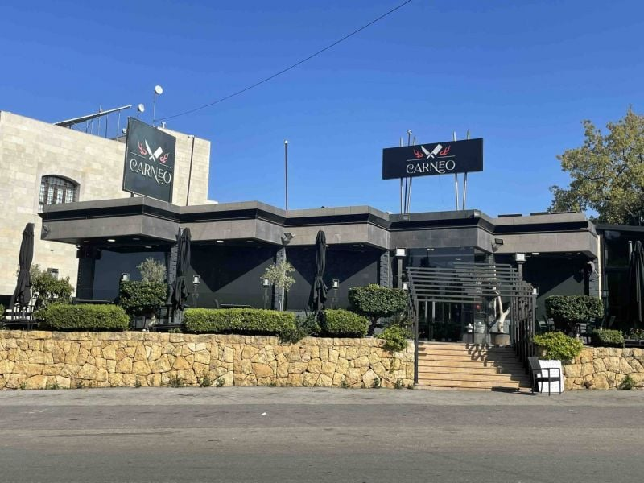
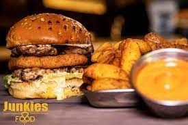
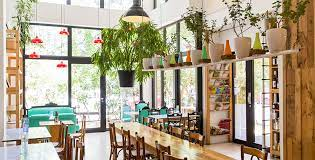
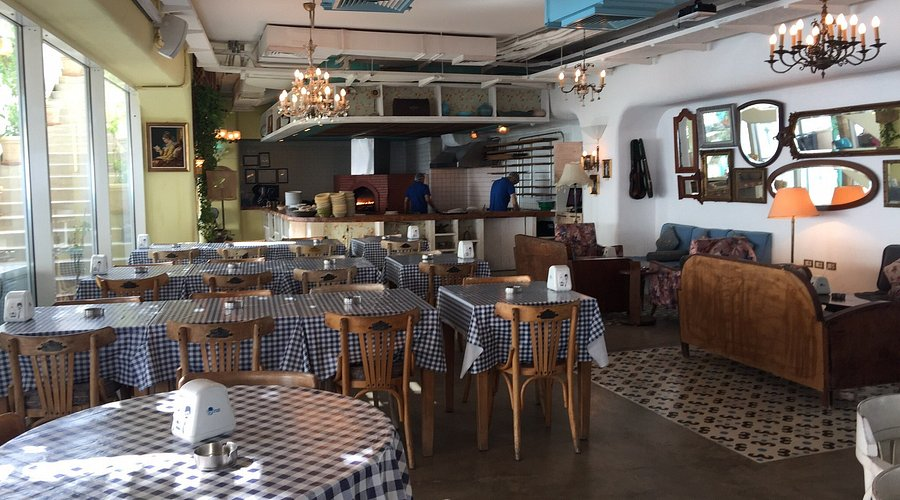
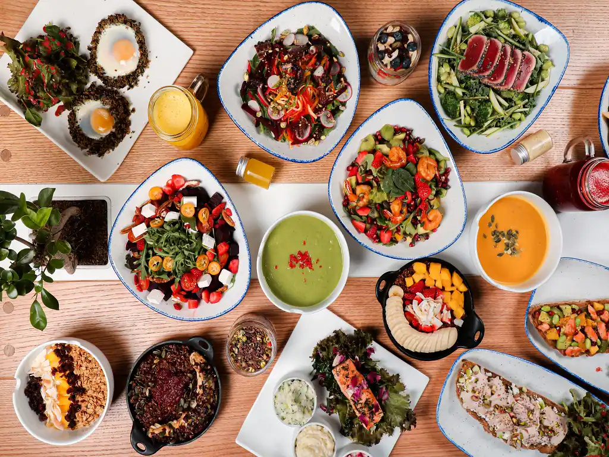
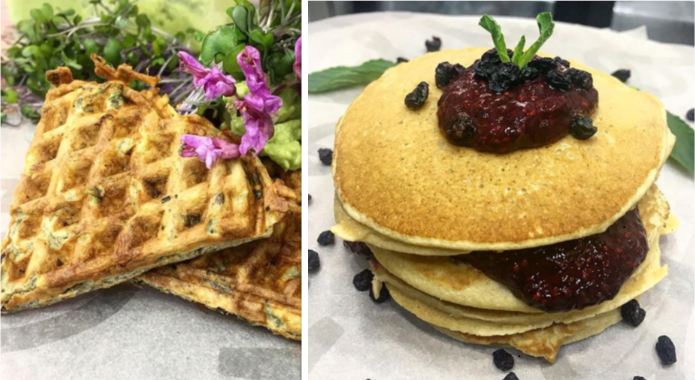

Junk food
- Carneo 
- Address:
Jeita Roundabout, Main Road - Telephone number:
+961 3 091 069 - Opening Times:
daily from 11:00 AM to 12:00 AM. - Reviews:4.5
- Junkies 
- Address:
Hadi Nasralla Highway - Telephone number:
+9611555769 - Opening Times:
12:30 PM to 4:00 PM - Reviews:4.1
- Tawlet 
- Address:
Beirut, Saifi Village. - Telephone number:
+961 1 448 129 - Opening Times:
09:00 AM - 09:00 PM Daily - Reviews:3.9
- Al Falamanki Beirut (Achrafieh) 
- Address:
Achrafieh, Beirut - Telephone number:
+961 1 322 222 - Opening Times:
8:00 AM to 1:00 AM. - Reviews:4.3
- The Barn 
- Address:
Gouraud, Beirut - Telephone number:
+9611449902 - Opening Times:
09:00 AM - 10:00 PM Daily - Reviews:4.5
- Organic Sisters 
- Address:
VGXG+22F, Beirut - Telephone number:
+9611577907 - Opening Times:
08:00 AM - 03:00 PM , closes on Sunday. - Reviews:4.4
Carneo is a distinguished grill house located in Jeita, Lebanon, celebrated for its exceptional meat dishes and inviting ambiance. Under the culinary expertise of Head Chef Mario Medawar, Carneo has garnered acclaim for its high-quality cuisine and community involvement. In October 2024, the restaurant notably distributed approximately 3,000 free meals to displaced individuals in central Beirut, reflecting its commitment to social responsibility
this hip junk food spot will satisfy so many of your cravings. With a menu loaded with appetizing starters, delectable burgers, sandwiches, and more, you'll quickly realize you need more than just one visit to this gem.
Home Food
Tawlet is a unique restaurant that features dishes prepared by local cooks from different regions of Lebanon. The menu changes daily, offering a variety of home-cooked meals.
Al Falamanki is a popular Lebanese restaurant chain known for its cozy, traditional atmosphere and authentic Lebanese cuisine.
Healthy Food
The Barn serves only the most beneficial of foods; organic, natural and healthy foods.
A catering kitchen delivering nutritious meals free of Hormones,antibiotic, gluten, diaries, and refined sugars and vegetable oils.